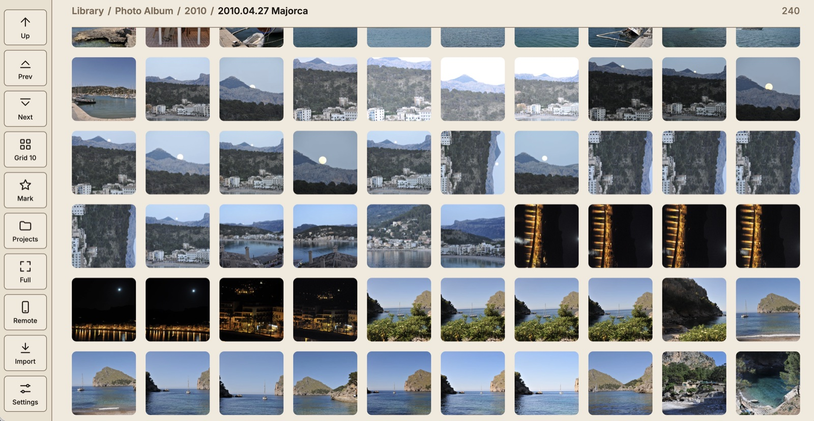
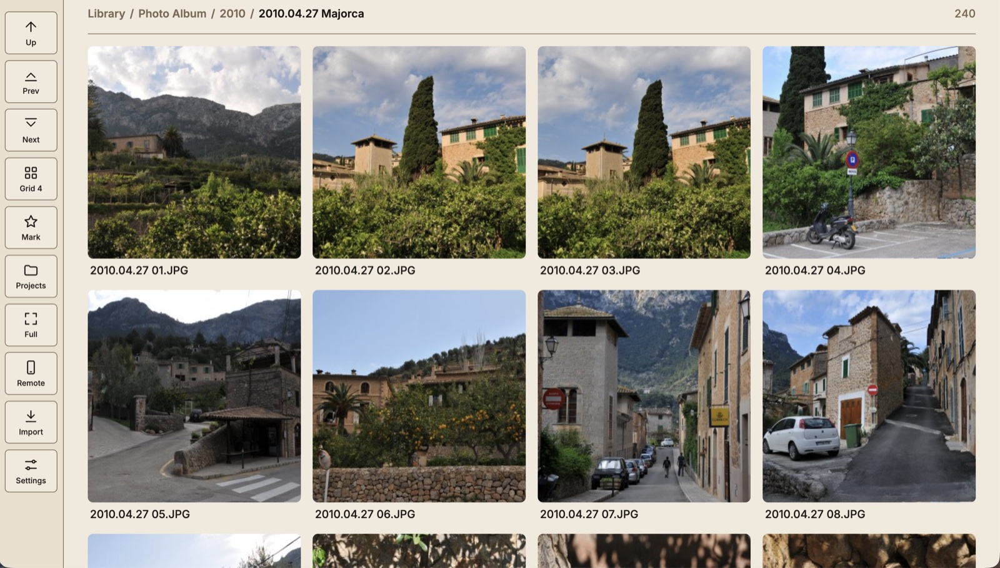
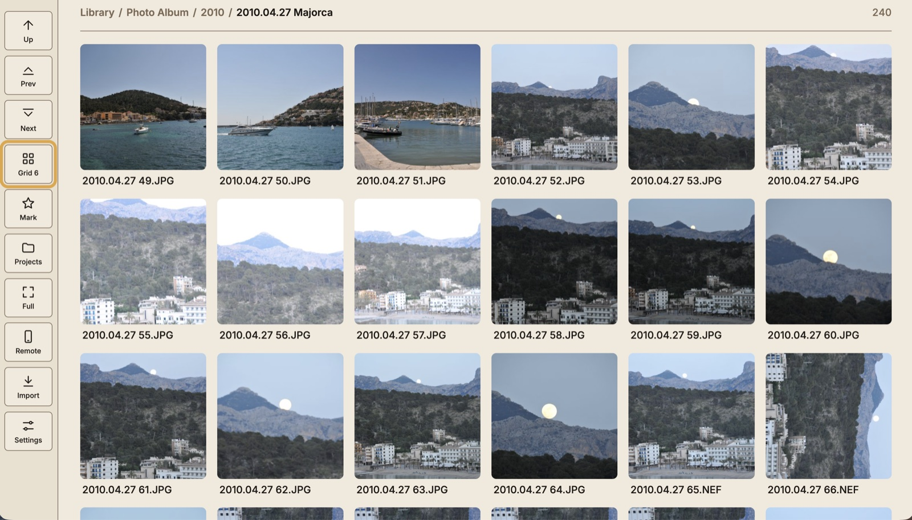
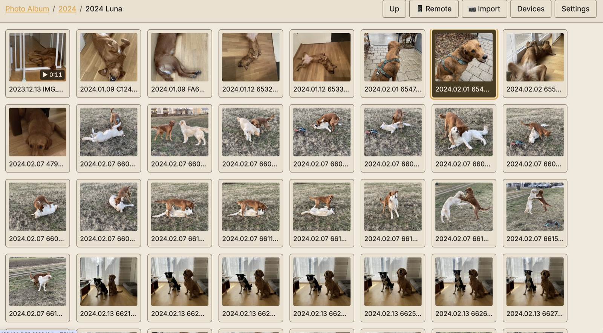
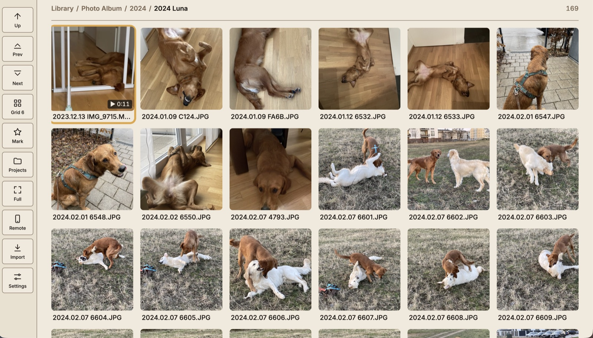
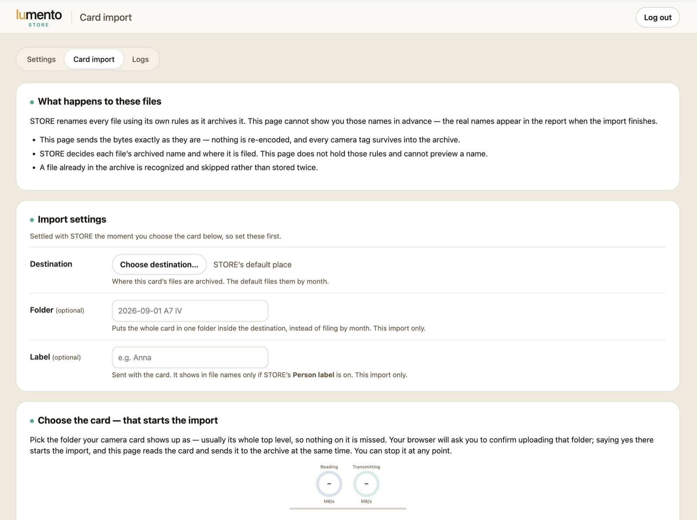

lumentoONE
A photo and video gallery for your NAS, in any folder you choose. It shows your library in a browser without opening the share over SMB, plays old camcorder and log footage properly, and reads camera cards into your archive through lumento STORE. One native app from App Central, with no Docker, no Postgres and no Redis.
Your library, as it already is.
lumento ONE is meant to replace the NAS's stock photo and video gallery. Point it at your folders and it does the rest in the background.

Choose how many photos fit across: Grid 4, 6, 10 or 14. Fewer for a closer look with file names, more to scan a whole shoot at a glance.


Any share, any folder
Use as many library folders as you like, on any share. The NAS's stock gallery wants everything in one fixed /Photos share. ONE shows your photos where you keep them.
Quicker than the share
Looking at photos over SMB is slow, folder by folder and photo by photo. ONE serves them to your browser ready to show, with the thumbnails drawn ahead of time, on a laptop, a phone or the TV.
Read-only on your media
ONE only reads your originals. It never writes thumbnails or caches into your shares. Rotate a photo or set a clip's log profile, and ONE keeps that in its own database. The same goes for Brighten dark photos, a setting for the whole app: it stretches a dark photo's tones across the full range instead of equalizing a histogram, so shadows lift without bringing out so much noise. The file stays exactly as it was.
Made for a TV remote
Left and right move through a folder, up and down move between folders. Your phone can act as the remote, and on a TV you sign in by scanning a QR code instead of typing a password. Why your phone says "not private".
Projects, like a calendar
ONE was built to pick a year's photos for a printed calendar from the couch. Mark photos for a project with the remote or your phone, then download them as one zip, after a preview that shows exactly what it holds.
Your NAS accounts
Sign in with the accounts your NAS already has. Each person sees only the folders ADM lets them read. Sign-ins pause after three wrong passwords and are stored only as fingerprints, and ONE's converters run in a sandbox.
Old formats, really supported.
The camcorder formats below were tested against real footage, not just a reading of the format specs. ONE converts them to ordinary web video the first time you watch them and keeps the result in its cache (50 GB and 30 days by default, both adjustable), so the next viewing starts instantly. Your original files are never changed.
| Format | Files | What ONE does |
|---|---|---|
| Sony AVCHD camcorders | .mts .m2ts | Deinterlaced and converted to H.264 video with AAC audio, sound levelled. A long take the camcorder split across several files plays as one video |
| MiniDV tapes, digitised | .avi (DV) | Deinterlaced, converted, sound levelled, and the picture's aspect ratio corrected so people don't look squashed |
| DVD-Video discs | VIDEO_TS folders | The disc's separate files are joined into one video you can play, then deinterlaced, converted, sound levelled and the aspect ratio corrected. 5.1 sound is mixed down to stereo |
| Phone and camera video | .mp4 .m4v .mov | Played as they are when your browser can. Otherwise converted to H.264 at up to 1080p the first time you watch, then kept. Sound stays as it was recorded |
| Other video | .mkv .wmv .mpg .mpeg .avi | Converted to H.264 the first time you watch, then kept |
| 4K and HDR video | HDR10, HLG, 4K, 60 fps | HLG plays as it is. HDR10 is tone-mapped for an ordinary screen, so it isn't washed out. A converted video plays at no more than 30 frames a second (60 at 30, 50 at 25), so it converts sooner |
| Log footage | S-Log2, S-Log3, C-Log2, C-Log3, V-Log, N-Log, F-Log, F-Log2, L-Log, Apple Log, D-Log | Converted to normal colours as you watch. Sony log is recognised from the clip itself. For the others, a curator picks the profile on the clip |
| Apple photos | .heic .heif | Converted to JPEG for browsers that can't show HEIC |
| FlashPix (1990s Kodak and similar) | .fpx | Converted to JPEG with fpx-convert, a FlashPix converter we wrote for lumento and publish under the AGPLv3 |
| Camera RAW | .arw .nef .cr2 .dng | Shown using the preview JPEG the camera embeds in the file |
| Everyday photos | .jpg .jpeg .png | Shown as they are |
Camcorder sound is levelled. AVCHD, MiniDV and DVD recordings have their loudness evened out, so a quiet camcorder recording plays at a sensible volume next to a loud one. Today's phones and cameras record at a sensible level, so their sound is left exactly as recorded.
Intel models convert on the graphics chip. On an AS6704T, camcorder clips convert about 2.5 times faster than on the processor alone. If the graphics chip can't do it, ONE converts the slow way instead.
Canon .cr3 files show up but can't be displayed yet. They appear as named tiles that say why. They'll start displaying, with no re-indexing, once a CR3 decoder is added.
ARM models (Drivestor series) convert slowly. They have no video hardware lumento can use, so a video that has to be converted waits for the processor alone: the first watch can take two to four times the clip's length. After that it plays at once. The details are in the FAQ.
Questions? Playback, formats, ARM models or signing in on a phone: see the ONE FAQ.
One app, two front ends.
Browsers on smart TVs age badly. A 2013 Samsung TV browser has no fetch, no CSS Grid and no ES6. ONE doesn't drop it. It serves two front ends and picks the right one by itself.



Card in the reader.
Every file on the NAS.
Put a camera card in your laptop's card reader, open ONE and pick the card's folder. lumento STORE does the rest.
- Checked at both ends. Your browser fingerprints every file with SHA-256, and STORE checks it again on the NAS.
- Never twice. Import the same card again and nothing is written a second time.
- Filed like your phone's photos. Named by when they were taken, never re-encoded, and a Sony clip's companion files kept beside it.
- Done means done. It says everything is on the NAS only once it is.
Import needs STORE installed and paired, and a current browser, which ONE tests before it shows the form. Without STORE, ONE is still a complete gallery. Card import, step by step.
Where it was taken.
A photo's info shows a small map of where it was taken. The maps come from OpenFreeMap and are kept on your NAS, so looking at one sends nothing to anyone.
- Off, the default: nothing is downloaded.
- World: the whole world down to country level, the same 29 MB for every NAS.
- Detailed: the regions and streets where your photos were taken. Enough to see which street, never which house.
Built, and still to come.
Built
- Indexing and background thumbnails
- Old video formats converted as you watch, on the graphics chip on Intel models
- HEIC and RAW display
- Remote-friendly viewer and phone remote
- Sign-in with NAS accounts, QR sign-in
- Modern front end, chosen automatically
- Dense tiled view
- Projects, with a zip of their photos
- Camera-card import through STORE
- Log footage shown in normal colours
- Maps of where photos were taken, kept on your NAS
Next
- Release in App Central
- Browsing by date, even for files that aren't named by date
- Showing Canon
.cr3photos
Platform
- Asustor ADM 5.1 or later, x86-64 and ARM
- Native binaries, no Docker
- Brings its own FFmpeg
Free, and it unlocks nothing. Every feature is already yours. If ONE earns its place on your NAS, a tip keeps it going: buy me a coffee on Ko-fi.